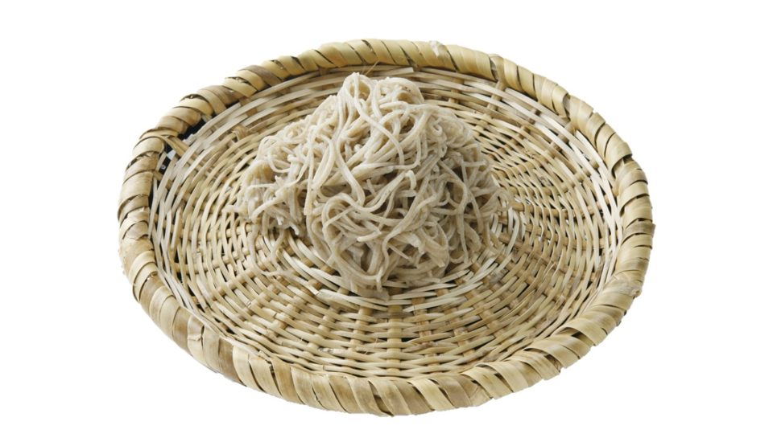
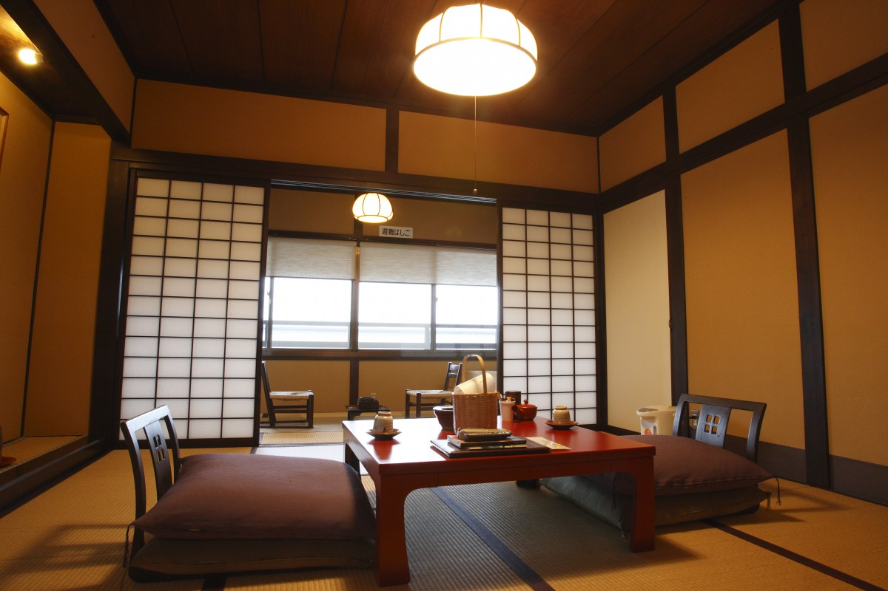
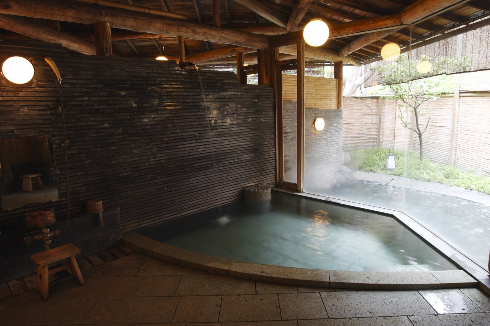
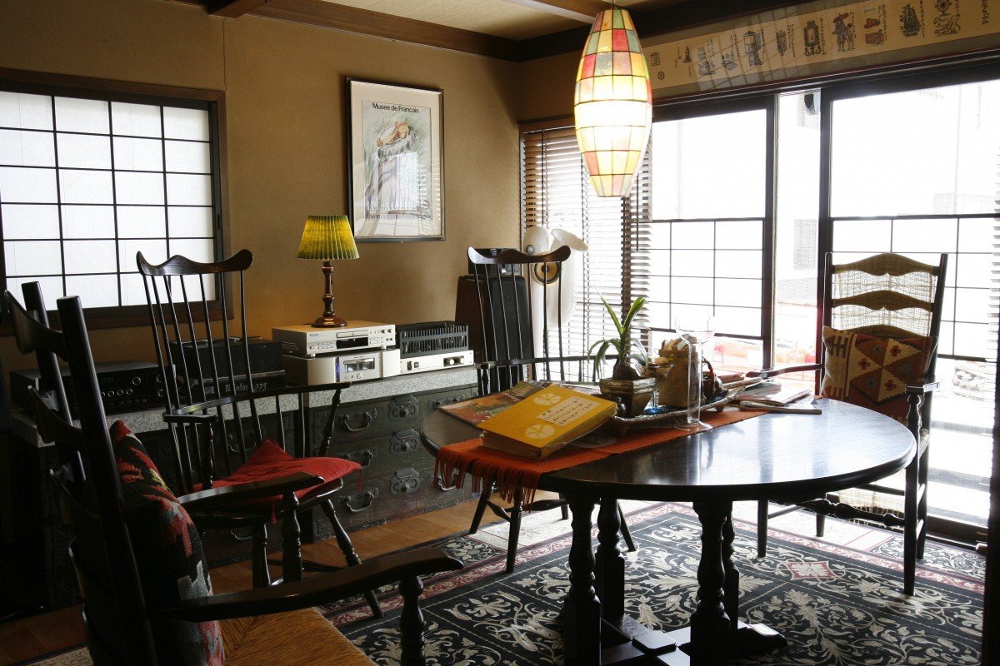
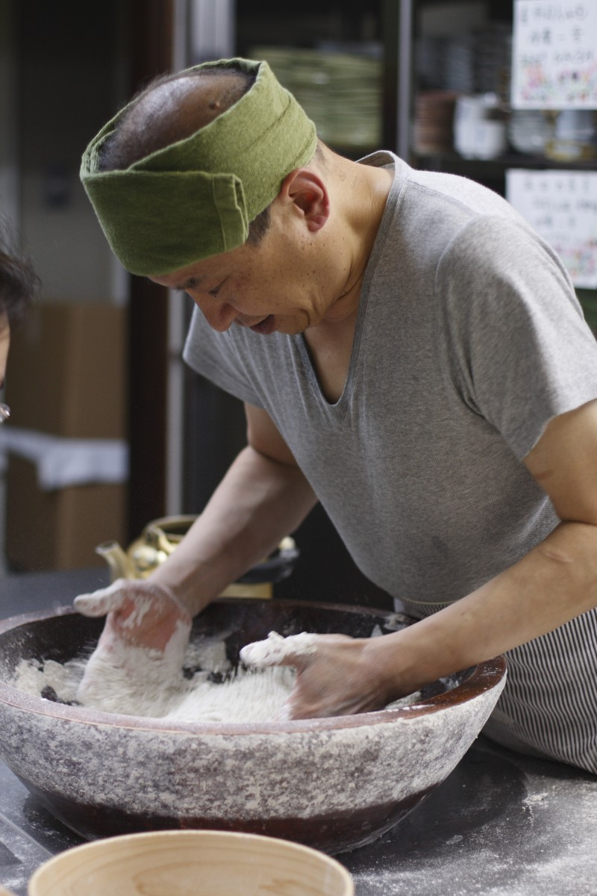
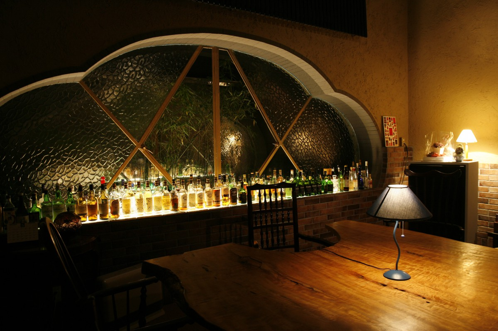

Префектура Нагано · Мацумото · где остановиться
Рёкан «Сугимото» в Мацумото: соба от хозяина, сакэ и джаз

Бывают гостиницы, куда едут не за видом и не за номером, а к человеку. В рёкане «Сугимото» таким человеком стал хозяин, которого все зовут Хана-тян. Соба ручной работы, разговоры, отборное сакэ и закуски к нему: попав в его мир, уезжать уже не хочется.
Выбор
Гостиница, которую узнаёшь по одной тарелке
Нет ничего скучнее гостиницы без характера. Модный интерьер, модные номера, и даже еда везде выглядит одинаково, словно её придумывали одни и те же архитекторы, советники и консультанты. С номерами ещё можно смириться, но почему ужин везде собран по одной схеме? На сайтах гостиниц повторяются одни и те же слова: «местные продукты», «душа гостеприимства», «вкус четырёх сезонов», «шеф сам ездит за продуктами». А по фотографиям блюд видно, что это всё тот же ужин в киотском стиле.

Один из способов выбрать гостиницу: взглянуть на фото еды на её сайте и сразу понять, где это. Рёкан «Сугимото» в онсэне Уцукусигахара, на тихой окраине Мацумото, такую проверку проходит. Его кухню узнаёшь с первого взгляда. Мацумото служит воротами в префектуру Нагано, и от вокзала сюда около 20 минут на машине.
В онсэне десяток гостиниц, больших и маленьких, и среди них «Сугимото» славится именно едой. Лицо рёкана: его хозяин Садао Ханаока, для всех просто Хана-тян.

Источник простой щелочной, без подогрева и без разбавления. В рёкане есть большая баня с открытой купальней (отдельно для мужчин и женщин), частная купальня из хиноки бесплатно и частная открытая купальня, где лежат в мелкой воде, за 2000 иен на 30 минут.
Хозяин
Один человек на всё
Хана-тян встречает гостей, месит собу, готовит. Иногда он сам заваривает чай или кофе в лобби и заводит долгий разговор о вине или об аудиотехнике. Он успевает везде, поэтому поехать в «Сугимото» значит поехать к Хана-тян.

В целом рёкан устроен в народном стиле мингэй, но в одних номерах интерьер напоминает ар-деко, а в других стоит ванна на гнутых ножках. Так задумал Хана-тян: ему хочется, чтобы гости увидели разные настроения.
Соба
Как месят собу к ужину
Отдохнув в номере, обязательно сходите посмотреть, как хозяин месит собу. Обычно мягкий и улыбчивый, в эти минуты Хана-тян серьёзен: он сражается с тестом, и на лбу у него выступают капли пота. Приятно знать, что эту самую собу подадут в конце ужина.

Ужин
Еда для тех, кто любит выпить
Ужин тоже несёт отпечаток характера хозяина. Столовая стоит в отдельном здании, и идут к ней подземным переходом. Уже эта дорога с её загадочной, чуть жутковатой атмосферой уводит в другой мир. Хана-тян очень любит сакэ, и едва застолье начинается, блюда для любителей выпить идут одно за другим.
Блюдо «Синсю-дзанмай», тартар из конины и «намэро» из горной форели ивана (рубленая рыба с мисо): от таких закусок у ценителя сакэ текут слюнки. Главное, сохранить место в желудке до собы. А после ужина ждёт бар «Хибики», где вечер проходит под джаз и хорошее звучание аудиосистемы.

Рёкан «Сугимото»
- Адрес
- префектура Нагано, Мацумото, Сатоямабэ, 451-7
- Телефон
- +81 263-32-3379
- Номера
- 17
- Цены / Вход
- от 15 900 иен с налогом за ночь с ужином и завтраком
- Заезд / выезд
- 15:00 / 10:00
- Как добраться
- от станции JR Мацумото на такси около 15 минут, от развязки Мацумото скоростной дороги Тюо на машине около 25 минут
Фото: Ацуси Ямахира.